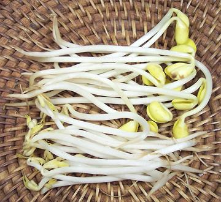
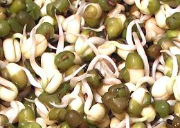
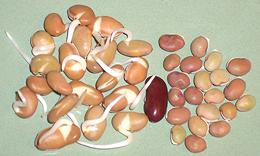
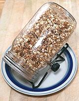

Bean Sprouts

[Mung Bean: Thua Ngok (Thai); Tauge (Chinese Hokkien);
Tao Nge (Thai Hokkien); Tua Ngok (Laos); Sukjunamul (Korea)]
[Soy Bean: Kongnamul (Korea)]
Various kinds of beans are sprouted before being served or cooked in
recipes. Sprouted beans cook quickly and are more nutritious than the
dried seeds. One study of sprouted soybeans showed Vitamin B levels
stayed the same, while Vitamin A increased 300% and Vitamin C increased
between 500% and 600%. There was also a wider range of amino acids.
Soybean sprouts have also proven effective in regulating blood sugar
levels. What beans are sprouted and to what extent they are sprouted
varies from region to region.
As with all legumes, bean sprouts do contain some anti-nutrients,
so consumption of raw bean sprouts should be moderate. Phytic acid,
a primary anti-nutrient which blocks mineral absorbtion, is reduced
by the many rinsings the beans go through during sprouting, but there
is still a fair amount remaining, particularly in soybean sprouts.
Anti-nutrients are further reduced by cooking.
Sprouting beans at home is very easy, but do not expect to produce
the straight plump stems of the sprouts shown to the left. This takes
special equipment to accomplish, including keeping the sprouting beans
under weights. For home use, see our
Sprouting Beans, Peas, and
Lentils page.
More on Products made from Beans
Working with Beans, Peas, &
Lentils.
East Asia & Southeast Asia
 In this region, long sprouts of Mung Beans (Vigna radiata)
predominate, with sprouts of Soybean (Glycine max) used to a much
lesser extent, except in Korea. These sprouts are shown in the photo
above, with Soy Sprouts at the top and Mung Bean Sprouts below. Soybean
sprouts sold in North America are usually around 3 inches, not including
the root, but are grown as long as 11 inches in Korea. Mung bean sprouts
are very well known in North America, but Soybean sprouts are mostly
available from Korean markets.
In this region, long sprouts of Mung Beans (Vigna radiata)
predominate, with sprouts of Soybean (Glycine max) used to a much
lesser extent, except in Korea. These sprouts are shown in the photo
above, with Soy Sprouts at the top and Mung Bean Sprouts below. Soybean
sprouts sold in North America are usually around 3 inches, not including
the root, but are grown as long as 11 inches in Korea. Mung bean sprouts
are very well known in North America, but Soybean sprouts are mostly
available from Korean markets.
While Soybean sprouts are the most used kind in Korea, they are used
to a much lesser extent in China, and are hardly used at all in Japan.
I attribute this to the relative robustness of Korean recipes, where a
durable sprout with a more robust flavor is appropriate. They are also
used in Southeast Asia, to about the same extent as in China.
Buying: Fresh Mung Bean sprouts are available in markets
everywhere in North America. Soybean Sprouts are available in Korean
markets. Sprouts should be crisp, with no sign of softening or decay.
Storing: Refrigerated in a plastic bag, with no free
water, Mung Bean Sprouts will last three days or so, Soybean Sprouts
about 2 days longer.
Prep: Bean sprouts should be rinsed. In China and
Korea, the thread like root end will always be pinched off (it's jobs
like this children are for), but we Barbarians often skip this tedious
step. It takes about 45 minutes to pinch the roots off 12 ounces of
bean sprouts. In Korea, some recipes call for the yellow bean to be
removed, but for most recipes it is left on. Some Korean markets carry
bags of Soybean Sprouts with the root ends cut off.
Cooking: Keep it short. For some recipes, as little as
10 seconds in boiling water for Mung Bean Sprouts, 30 seconds for Soybean
Sprouts. For soups and stews, the bean sprouts go in in the last minutes
of cooking. In some Southeast Asian soups, raw mung bean sprouts are
simply sprinkled on top of the soup at serving.
South Asia - India

In India, both Mung Beans and Soybeans are are sprouted, and many other
beans as well, but much differently than in East and Southeast Asia. The
photo to the left shows a close up of mung beans sprouted properly for
Indian recipes. Most of the nutritional advantages of sprouted beans are
already realized when the tails are just 1/2 inch or so long. You will
not be able to find sprouts like these in markets in North America, and
will have to sprout your own.
Cooking: Sprouts in this form can stand more cooking
than than the East Asian style sprouts. Most beans should be cooked to
reduce the natural toxins they contain. Generally, beans that didn't
sprout are cooked right along with the sprouted ones. Some beans,
like Black Beans, have a low germination rate (as little as 50%).

In India, many different beans are used sprouted. The beans shown in the
photo to the left are Kodava Val, a rather small variety of Lablab
beans from southern India. This one has a very tough skin, so is usually
sprouted, then the skin is removed. That's a rather tedious job (again,
this is the sort of job children are for), but the flavor of the beans
is very good.
Sprouting Beans

This subject now has its own page,
Sprouting Beans, Peas, & Lentils
bp_sproutz 151002 - www.clovegarden.com
©Andrew Grygus - agryg@clovegaden.com - Photos on
this page not otherwise credited are ©
cg1 - Linking to and non-commercial
use of this page permitted